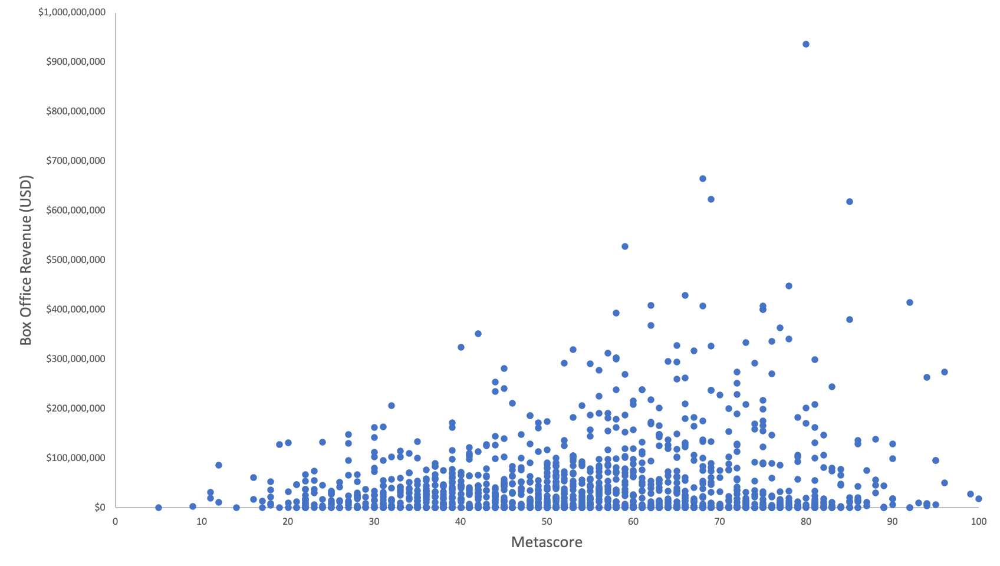
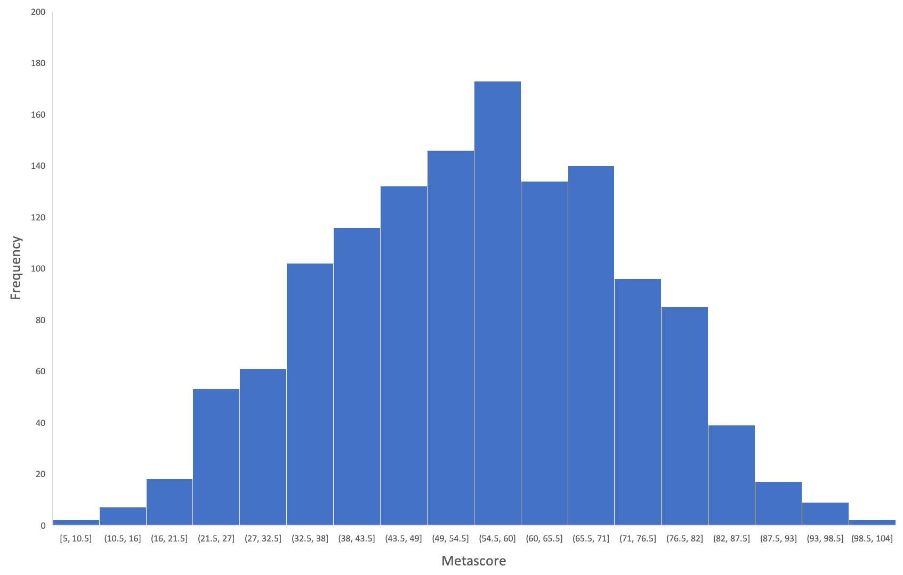

The Question
How well can we predict the box office revenue of a movie based on its overall critical score?
Using data sourced from IMDB and OMDB, we built a predictive algortihim to estimate the box office revenue of any film based on its critical reception.
Metascore : a number that captures the essence of the critical opinion of a movie
Please follow along below as we walk you through the entire modeling process from web scraping to machine learning.
The Data
We used python to perform a webscrape of the IMBD website for the top 10,000 movies released from January 1 2010 to December 31 2019.
from bs4 import BeautifulSoup
import pymongo
import requests
import json
from pprint import pprint
import matplotlib.pyplot as plt
import numpy as np
import pandas as pd
movie_titles = []
start = 1
while start < 10000:
imdb_url = f'https://www.imdb.com/search/title/?title_type=feature&release_date=2010-01-01,2019-12-31&
view=simple&sort=num_votes,desc&start={start}&ref_=adv_nxt'
imdb_response = requests.get(imdb_url)
soup = BeautifulSoup(imdb_response.text, 'html')
results = soup.find_all('div', class_='col-title')
for result in results:
title = result.find('a').text
movie_titles.append(title)
start += 50
This returned the title of each film from the last decade that was then used to perform an API call to OMDB to return all of the available information.
url = "http://www.omdbapi.com/?t="
api_key = API_KEY
output = []
for movie in movie_titles:
response = requests.get(url + movie + api_key)
data = response.json()
output.append(data)
with open('data.json', 'w') as outfile:
json.dump(output, outfile)
Using a for loop we were able to extract the information wanted by accessing the JSON with the appropriate key value pairs
metascores = []
index = 0
while index < len(movie_titles):
for metascore in output[index]:
try:
metascore = output[index]['Metascore']
metascores.append(metascore)
index = index + 1
except KeyError:
metascores.append("NA")
index = index + 1
This was repeated for all information we wanted to access, including IMDB scores, boxoffice reveunues, director name, and top billed actors.
The data was then cleaned and a dataframe was created using pandas and then exported to CSV for ease of use.
df = pd.read_csv('Resources/Data/data.csv')
df.dropna(inplace=True)
df.reset_index(inplace=True)
df.drop(['Unnamed: 0', 'index'], axis=1, inplace=True)
df['Box Office'] = df['Box Office'].apply(lambda x: float(x.translate({ord('$'): None, ord(','): None})))
df['IMDB Votes'] = df['IMDB Votes'].apply(lambda x: float(x.translate({ord(','): None})))
df.to_csv('Resources/Data/clean_data.csv')
Let's Plot! Exploratory Data Analysis
Boxoffice Revenue vs. Metascore

Metascore distribution

Machine Learning
Now that our data is Extracted, Transformed, and Loaded, we can begin building the model.
Using SKLEARN we begin training our model.
Starting with a random forest model
from sklearn.preprocessing import MinMaxScaler
scaler = MinMaxScaler().fit(X_train)
X_train_scaled = scaler.transform(X_train)
X_test_scaled = scaler.transform(X_test)
from sklearn import tree
model = tree.DecisionTreeClassifier()
model.fit(X_train_scaled, y_train)
from sklearn.metrics import mean_squared_error, r2_score
predicted = model.predict(X_test)
mse = mean_squared_error(y_test, predicted)
r2 = r2_score(y_test, predicted)
Mean Squared Error (MSE): 8269444975456968.0
R-squared (R2 ): -0.14794964711248126
Let's look at the stats!
Hmmm...not a great mse or r-sqauared...
Let's try a linear regression
from sklearn.metrics import mean_squared_error, r2_score
predicted = model.predict(X_test)
mse = mean_squared_error(y_test, predicted)
r2 = r2_score(y_test, predicted)
print(f"Mean Squared Error (MSE): {mse}")
print(f"R-squared (R2 ): {r2}")
Mean Squared Error (MSE): 7080128703282929.0
R-squared (R2 ): 0.017149122998371902
YIKES! That's still a big MSE...let's predict something anyway
If we input a Metascore of 75 our model predicts box office revenue to be $61,275,883.71